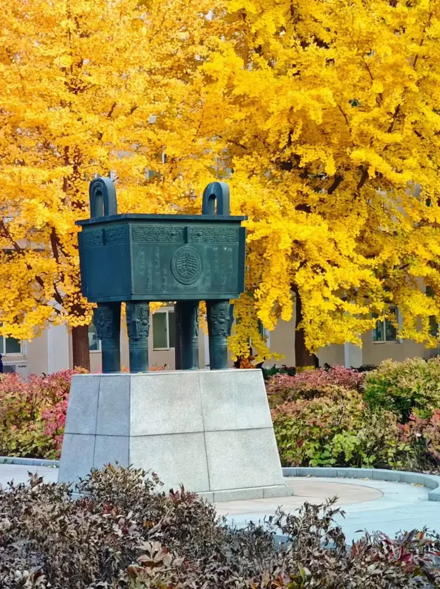
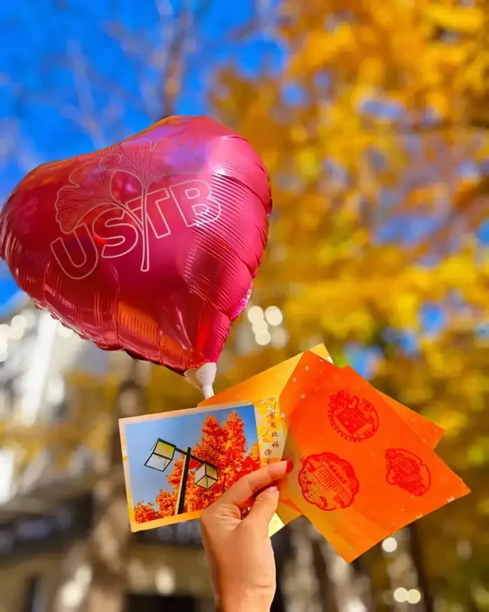

The team guide
Notes from USTB students who went to high school in and around Fuyang, Anhui.
Why we come home
Our Chinese name plays on a phrase meaning “to head home.” We swap its final character for the first character in Fuyang. We grew up here, left for Beijing to study, and now return each winter as part of the University of Science and Technology Beijing’s Anhui outreach delegation.
Our students study materials, mechanical engineering, economics, management and languages. At school visits we talk about our own courses and answer questions. When we need another perspective, we ask a student in that major. Our guides and talks are free.
Meet Huaihuai and Huihui


Huaihuai brings a taste of home with two bowls of Fuyang noodles. Huihui wears a headband inspired by Wenfeng Pagoda and carries a peony. Together their names bring the Huai River and Hui culture into the team’s identity.
Reading admissions data in Anhui
- Find your rank. In the provincial score distribution for your year and subject category, find your score. The number at that score counts tied candidates. The cumulative count includes candidates above it. Keep both figures.
- Compare like with like. In USTB’s historical results, select Anhui and the relevant year. Record whether the figure is for the whole university, an admissions group or a particular major. To convert a past score to a rank, use that year’s provincial table.
- Check the current plan. For each major, verify the subject requirements, places and application codes against this year’s official documents. Keep the source link next to each figure.
Historical admissions data (in Chinese) · Current provincial plans (in Chinese)
Choosing between two majors
Start with something you enjoyed enough to work on for an afternoon. Was it deriving an equation, taking a mechanism apart or measuring how a material changed under stress?
For each major, pick three courses you would like to take, one course title you do not understand and one lab or design project. Ask a student from each major the same question: “What did you make or measure in your last project, and what did you hand in?”
If several majors admit students as a group, ask the college when students choose a specialization and how places are allocated. Record the student’s year alongside their answer and check the rules for your own cohort.
A day on Xueyuan Road
Ask a student to walk you through yesterday. Where did they study during a forty-minute gap? Where did they go when they needed two uninterrupted hours? Which dining hall did they reach after class, and how long was the queue?
For accommodation, ask about the campus, building and year of entry. For clubs, ask how a beginner joins a normal session and what happens when training overlaps with a lab. Those details make it easier to picture your own week.
Autumn at USTB


Questions we hear at school visits
Does the university’s cutoff tell me whether I can enter my preferred major?
A university-wide figure and a major-specific figure answer different questions. Use the provincial rank table and results for the relevant group or major. Check more than one year.
What does admission to a group of majors mean?
You start in a broader subject group and later enter a particular major. Check the list of majors in the group, the timing and the college’s allocation rules for your cohort.
How do I get a useful answer about student life?
Ask about one recent experience, such as a lab, a dorm room or joining a club. For housing, note the building and year. Your own arrangements will be in your intake notice.
Winter school visits
We visit high schools in Fuyang and the surrounding counties for classroom talks and dedicated sessions. The team noticeboard is where confirmed dates and schools are published.
Ask the team
The team’s online Q&A channel is being prepared. When asking about admission, include your province, year at school, subjects and provincial rank. For a question about a major, tell us what you most want to understand.
Teachers arranging a visit can check the team’s contact page for the current coordination channel.
Read student questions · Current contact channels (in Chinese)
Application resources
Team credits
Back to Fuyang is the Fuyang team of USTB’s Anhui winter outreach delegation. The team’s art and design group created the crest, mascots and poster. The autumn photographs are from the team’s campus album.